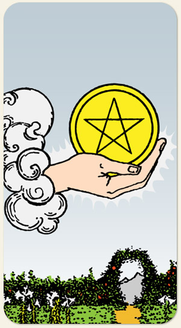

A semente da manifestação material, a prosperidade e a oportunidade tangível. A existência de recursos, saúde ou estabilidade suficientes para iniciar um projeto sólido. A abundância física, o conforto, a segurança, o crescimento prático e as realizações no mundo real.
Uma semente sem terra não brota, a semente é o Às e a terra é o Naipe de Ouros, o objetivo do Elemento Terra é ser rico. É uma dádiva que já vem pronta e só precisa de um ambiente para se desenvolver, é o talento que, se for cuidado, pode dar muitos frutos. Ter recursos para começar algo.
Positivo: Coisas se materializando, projetos dando certo. Por ser um naipe passivo, se trata de um momento em que a pessoa irá receber algo e, portanto, precisa manter uma postura receptiva. Dádivas de Deus, investir em algo que se acredita.
Negativo: Enterrar os recursos e talentos, não ter o necessário, não sair do campo das ideias, algo que não se materializa, ou é materializado mas não usado, é a semente apodrecida e que não germina mesmo que tenha todos os recursos necessários, sementes perigosas, ervas daninhas, ter cuidado como que se planta, um dinheiro que é emprestado e que será cobrado com altos juros, mau uso dos recursos disponíveis.
Símbolos: Mão Saindo da Nuvem, Jardim, Lírios Brancos, Caminho, Arco, Montanha.
Cores: Amarelo, Verde, Branco, Cinza.